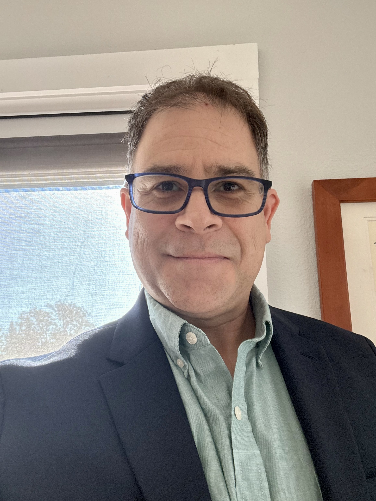
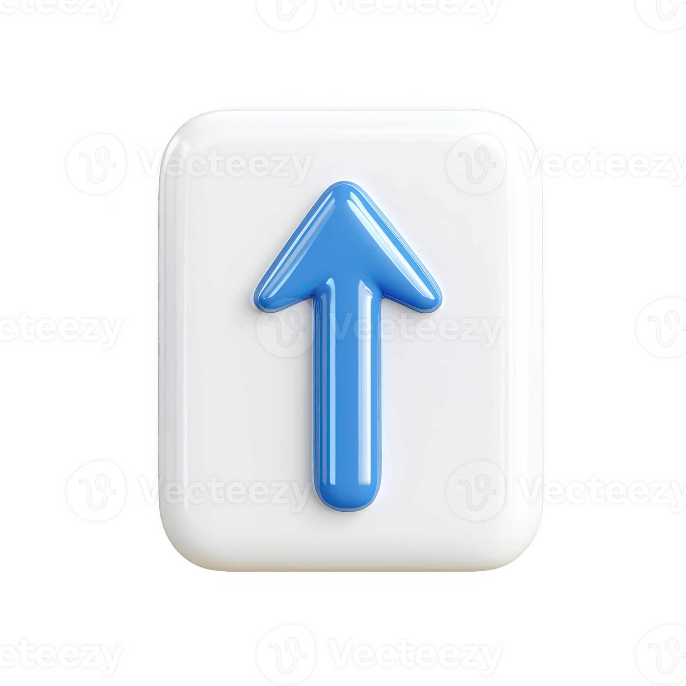

About Me

My name is Aaron Haze, and this website is part of my Web Page Development coursework at State College of Florida. I am using this site to build a professional online presence that reflects my goals in IT, cybersecurity, and technical support. Over time, this page will grow into a full portfolio that showcases my skills, projects, and experience.
I have hands-on experience in customer service, technical troubleshooting, and working in high-pressure environments. I am CompTIA A+ certified and actively expanding my skills in networking, security, and programming. This site is a practical way to apply what I am learning in class and to create something I can show to future employers.
As the semester continues, I will add more pages and features, including a newsletter, portfolio, and additional resources. My goal is to turn this simple assignment into the foundation of a professional website that represents my work ethic, growth, and long-term career ambitions.
For technology news and industry insights, visit IBM.
Goals
My long-term goal is to build a stable, rewarding career in IT and cybersecurity. I want to combine hands-on technical work with problem-solving and continuous improvement. This website is one small step in that direction, helping me practice HTML, structure content, and think about how I present myself professionally online.
Click the image below to return to the top of the page:
